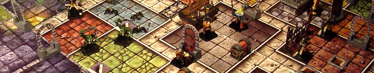
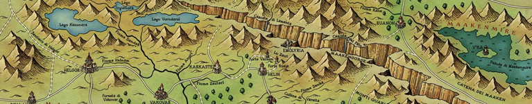

Mi è capitato di discutere molte volte, con altri appassionati e non, del perché mi capiti di spendere così tanto del mio tempo giocando da tavolo. Di solito rispondo in modo molto evasivo: “mi diverto così” in genere è una risposta sufficiente a soddisfare la curiosità di tutti. Dopotutto, il divertirsi, cioè intrattenersi e passare il tempo, non è forse la ragione principale di ogni hobby e passatempo?
No, in effetti non lo è. La risposta alla domanda “perché si gioca”, almeno quando rivolta a me, è molto più complessa di così. È in effetti il culmine di una vita passata a giocare, e a farlo per motivi diversi e a volte anche contrastanti.
Ma in genere, questo tipo di risposta lascia molto a desiderare: non sono in molti, specialmente tra i non-iniziati all’hobby, a voler esplorare la questione. Non tutte le domande semplici, hanno risposte semplici, e questo in genere spaventa chi non è pronto a misurarsi con le complessità di un argomento.
Questo articolo vuole essere una spiegazione più approfondita alla questione. È una risposta che, come tutte le risposte, contiene una certa dose di personalizzazione: la storia che segue è vista attraverso i miei occhi, e potrebbe essere ovviamente molto diversa da quella che darebbe un altro appassionato. Eppure, è anche vero che tutti gli esseri umani giocano e che tutti quanti abbiamo una certa necessità di esprimere noi stessi e i nostri bisogni attraverso il gioco.
La mia storia è personale, ma non è speciale e unica. In parte, è sicuramente anche la storia di molti altri, se diamo retta a quello che dicono certi studi.
Spero quindi che anche voi possiate trovarci qualcosa di vostro.
Figuratevi un bimbo di 7 anni che non ama studiare. Un giorno, quel bambino è a scuola, che scarabocchia qualcosa sul suo quaderno di italiano. Disegni a caso, qualche drago, aspettando l'intervallo. La maestra chiama la classe a raccolta: si va in biblioteca a fare un'uscita, fate firmare questi fogli. Qualcuno esulta, qualche banco davanti.
“Bah... biblioteca...” pensa il bambino. “Cosa c'è di così eccitante nella biblioteca? Quei quattro volumetti imbustati ci sono anche in classe, e sono sempre gli stessi. Che differenza può fare leggerli in un altro posto?”
Ricordo che metà dei miei amici gironzolava per la saletta. Quando la maestra li guardava, facevano finta di osservare la costola di qualche libro. Poi tornavano a gironzolare, e se ne stavano zitti. Altri leggevano gli stessi libri che leggevano sempre.
Io proprio no. Non ci tenevo. Leggevo già abbastanza dal sussidiario e non volevo farmi mettere sotto da una maestra qualsiasi. Mi ero seduto in un angolo, vicino a uno scaffale, e mi guardavo bellamente per aria. Ero granitico nel mio proposito di farmi gli affaracci miei. Niente e nessuno, mi ci avrebbe distolto.
Niente e nessuno.
Fu allora che la notai.
C'era questa figura oscura in biblioteca. Il ventre rigonfio e gli artigli anneriti, le fauci e la lingua contorte in un sorriso malvagio. I suoi occhi, piccoli e verdi, mi fissavano insistenti, e tra le dita tozze reggeva un pugnale insanguinato. Era sulla copertina di un vecchio paperback: la carta era tutta gialla, la copertina era stropicciata e consunta. Qualcuno lo aveva dimenticato lì, a terra.
Tutto nella norma: deve essere uno di quei libri fantasy come ce ne sono tanti altri, pensai. Avrei avuto anche ragione, se non fosse stato per un piccolo dettaglio. Una scritta alla base copertina, abbastanza insolita: “LibroGame, il protagonista sei tu”.
Il libro, dentro, era molto semplice: dopo una breve spiegazione su come prepararsi all'avventura, si veniva catapultati dentro una storia di cavalieri solitari e grandi mali che aleggiavano sulla terra fantastica di Magnamund. Si giocava leggendo paragrafi in successione: ogni passaggio del libro lasciava scegliere tra due o più azioni da seguire, e ogni bivio rimandava a un capitolo differente del libro. La storia prendeva una forma sempre diversa ad ogni rilettura: di là c'era un signore delle tenebre dal volto di morte; di qua una banda di briganti assassini che custodiva un grande tesoro; qui stavano cavalieri e segreti inconfessabili; e laggiù mostri nascosti nel buio e un vecchio mago saggio che deve essere salvato.
Il mio primo LibroGame è stato “I Signori delle Tenebre”, della leggendaria collana “Lupo Solitario” di Joe Dever illustrata da Gary Chalk. Era qualcosa di cui non avevo mai davvero pensato potesse esistere: un libro d'avventura interattivo. Un libro con le pagine che seguono l'ordine che vuoi dare loro, dove occorre prendere appunti su quello che si è trovato e che potrebbe tornare utile, libri dove se non tieni il segno e muori devi ricominciare da capo e dove si imbroglia sistematicamente per non dover tornare indietro.
Leggevo quei libri ancora e ancora. Non mi stancavo mai. Dopo qualche mese, avevo letto tutta la saga, e avevo letto anche tutti gli altri LibriGame della biblioteca. Non erano molti, ma c'era di tutto. Libri dell'orrore, libri gialli basati sulle avventure di Sherlock Holmes, libri di fantascienza e libri di ninja. C'erano mille mondi e mille modi in cui perdersi e ogni volta tornavo a cercarli.
Quei libri avevano alimentato in me il desiderio di fuggire.
Era lo stesso genere di desiderio che, nel cortile della scuola, faceva credere ai miei amici e a me di essere eroi che insieme combattono il male e che si materializzava inserendo un floppy-disk nel PC di casa. E nel farlo, il tempo si contraeva, si dilatava, assumeva dimensioni inspiegabili e assorbiva tutti noi. In quel momento, non eravamo né a scuola, né nel nostro piccolo paese senza divertimenti, ma stavamo esplorando mondi alieni, diversi.
Non sapevamo come definirla, quella sensazione di flow dove la concentrazione di tutti saliva alle stelle, ma la conoscevamo. Era un piccolo quadretto di tempo fuori dal tempo, dove non si pensava alla scuola, ai litigi con gli amici o con i genitori. Mi ricordava quella che provavo nel leggere i racconti di Roald Dahl o che, prima ancora, m'assaliva ascoltando i libricini sonori dell'asilo, o le favole improvvisate di mia madre o quelle vere sulla guerra, di mio nonno.
Ma in quelle storie io non avevo voce in capitolo. Erano lì, ed erano storie scolpite nella pietra, senza che io potessi cambiarle. Ogni tanto era divertente vederle ripetersi, e qualche volta mi ispiravano in modi diversi e piacevoli... ma non erano le mie storie.
Non solo, ma le storie che ci venivano propinate dagli adulti non avevano delle vere regole. Erano un estratto, un'esperienza e, sospettavamo, un insegnamento e quasi un rimprovero, a volte. A vederci bene, erano una spiegazione su cosa fare e cosa non fare delle nostre vite. Quelle storie, di fatto, erano loro stesse delle regole di un gioco troppo grande e complicato per noi, le cui regole contrastavano l'una con l'altra, dove le situazioni non erano mai ben definite e l'obiettivo non era chiaro a nessuno.
I LibriGame, insieme ai pochi videogiochi che possedevo e ai giochi fatti in cortile con gli amici, erano diversi. Le regole lì erano chiare e coerenti e allo stesso tempo fini a sé stesse, perfettamente inutili, se non a farci divertire e a materializzare i nostri desideri. I giochi della mia infanzia, in altre parole, erano una forma di evasione e di creazione semplificata: si giocava per il puro piacere di farlo, cioè per quello di votarsi totalmente a un’esperienza, nella quale inserire i propri desideri e le proprie aspirazioni, anche se impossibili. Certo, c’erano anche i giochi “educativi”, quelli imposti dalla scuola e comunque apprezzati in parte (dopotutto, erano pur sempre dei giochi), ma certamente il nostro fingere di essere cavalieri all’assalto di una fortezza non aveva nulla di direttamente educativo.
All'epoca, pensavamo non avremmo mai smesso di amare i nostri piccoli mondi meravigliosi.
Eppure, non si può fuggire per sempre. Col tempo, quegli stessi scenari che ci eravamo figurati come indistruttibili, vennero a sfumare. Altre cose cominciavano a diventare importanti e la Vita, quella vera e che un tempo pensavamo del tutto secondaria, cominciava a diventare un gioco sempre più interessante man mano che si cresceva.

Ero da poco uscito dalla scuola media. Con gli amici fatti al Liceo si passava molto tempo a perdere tempo: cassata da tempo l'abitudine di rincorrersi in cortile fingendo di essere maghi e supereroi, ci si considerava del tutto superiori. Fingere di essere supereroi o maghi era da bambini: lo scopo era invece essere adulti, con interessi da adulti, e aspirazioni da adulti seri. E contava che tutti lo sapessero.
Il nostro gioco di finzione, ovviamente, non ci impediva comunque di goderci i nostri telefilm, i videogiochi e i fumetti. Eravamo adulti, ma adulti nerd, dopotutto, no? I nostri non erano più “giochi” o “fughe”, ma “hobby” e “passioni”. La cosa era completamente diversa, ai nostri occhi.
Un giorno, durante l'intervallo, si era discusso di questa cosa che avevo scoperto navigando in Internet. Un gioco strano, che era come un videogioco, ma dove non c'era uno scopo o una strada preconfezionata: si doveva decidere tutto da soli, si doveva improvvisare cosa fare e si doveva scegliere per cosa combattere. Volendo, si poteva mandare tutto all'aria e fare esattamente il contrario di quello che tutti si sarebbero aspettati. L'idea parve subito a tutti molto affascinante.
La nostra prima sessione di Dungeons & Dragons fu tanto divertente quanto disastrosa: nessuno di noi sapeva bene come interpretare le regole infinite della edizione 3.5, e i personaggi erano tutti invariabilmente caricature dei personaggi de Il Signore degli Anelli. Fini tutto molto presto, tra le risate di tutti, perché uno dei miei amici finì con l'impalare con una freccia il ladro del gruppo.
Ma la settimana dopo eravamo di nuovo lì, a riprovarci. La libertà che ci era data dal gioco ci stava dando alla testa. Creammo personaggi a non finire, e storie e interi mondi in cui farle muovere. Ogni sessione diventava un'opportunità per esercitare la nostra fantasia e la nostra arguzia.
Io adoravo fare da Master, da arbitro, e mettere gli altri miei amici di fronte ad enigmi da risolvere e scelte da compiere, oltre che alle orde di mostri da superare. Le storie erano a volte felici e a volte tragiche. Molto spesso i miei giocatori dovevano fare delle scelte difficili e mettere in discussione una parte di loro stessi.
A ripensarci bene, non posso dire che nella nostra piccola distrazione non ci fosse più la volontà di scappare. C'era eccome, ma era molto diversa da quella a cui eravamo abituati da piccoli. Il gioco era un banco di prova e un palco, dove confermare certezze, affermare sé stessi e cercare negli altri qualcosa di nuovo, o qualcosa di sé stessi.
Stavamo iniziando a capire cosa ci si aspettava da noi e cosa era accettabile facessimo, e nei nostri giochi questa nostra nuova sicurezza non faceva che riflettersi. Di conseguenza, ogni personaggio era un po' il suo giocatore, e nessuno si illudeva non fosse così (ed anzi, era quello che tutti pensavano fosse la norma), sicché ciascuno cercava di comportarsi nel modo che più pensava gli avrebbe dato più tono. Dopotutto, eravamo dei teenager: la pressione di conformarsi agli altri era il punto cardine delle nostre vite.
La nostra fuga era diventata qualcosa di profondamente diverso: non più desiderio di altro, ma affermazione della realtà stessa così com'era e come volevamo farla apparire agli occhi di altri. Non era poi così tanto diverso da quello che facevamo la mattina, vestendoci pensando a cosa gli altri avrebbero pensato di noi. Un controsenso, com'è in genere ogni ragazzino fino all'età adulta.
Il gioco assumeva dunque una funzione di omologazione e di esame: in ogni partita emergeva il desiderio di sentirsi parte di qualcosa, ossia il mondo dei propri coetanei, e di sentirsi accettati. Allo stesso tempo, lo stile e i giochi che mettevamo nelle nostre avventure erano “maturi”, con scenari e situazioni che richiedevano che anche noi fossimo, di nostro, altrettanto “maturi”.
Per noi adolescenti, era necessario dimostrare di esserci, di essere sul pezzo, di essere affidabili, non infantili e adatti alla vita, nonostante che della vita non si sapesse ancora nulla.
Poi si cresce. Certe cose smettono di essere importanti. La voglia di apparire diminuisce e il bisogno di essere prende il sopravvento. Le miniature e i dadi perdono di valore, di fronte ai primi veri amori, ai primi lavori, alle prime scelte importanti e autonome. Finiscono in un cassetto insieme a tutte le avventure, per lasciare il posto alla vita.

L'Università è l'inizio di una vita nuova, fatta di esami e notti insonni. Impegni, conquiste, a volte fallimenti. Programmi per il futuro. Tante cose, troppe cose, che si accavallano continuamente e che non lasciano un attimo di respiro. L'Università è un impegno costante, che assorbe e piega tutti.
Dall'Università non si fugge. L'Università non è un gioco.
Tranne che, alla fine, non è affatto così.
All'Università si è abbastanza cresciuti da capire che non occorre darla a bere a nessuno. Non ci sono maschere da indossare, se non quelle che si vogliono indossare volontariamente. Le opinioni sono tante e contrastanti, e quindi non c’è bisogno di conformarsi a nessuna di esse. Se una cosa piace, piace e basta.
E allora con le nuove compagnie si rispolverano i vecchi giochi, le avventure, le fantasie. Dopo un po’, si ritorna alle vecchie abitudini.
All’inizio, la scusa è un’occasione di sfogo dallo stress. Ci si trova per una partita, per ridere un po’ insieme, magari per una birra. Si apparecchia qualcosa a caso. Nel nostro caso, era stato a una serata ludica in un negozio a cui eravamo andati per caso, giusto perché non avevamo nulla di meglio da fare.
Si prova un gioco, poi un altro e un altro ancora. Si parla e si scherza, si torna a giocare, tutti insieme. Alla fine della serata, ero talmente soddisfatto da aver comprato due giochi e qualche settimana dopo avevo iniziato la mia collezione. Il tentativo di una giornata si è trasformato in un incontro fisso, e da quello si è tradotto in un impegno concreto, prima indipendente e poi con Ludimus.
Non a tutti verrebbe in mente di dedicarsi così tanto al mondo dei giochi in ogni loro forma, ma dopotutto dobbiamo tutti metterci in gioco, no?
Se la Vita è una plancia indefinibile, sfocata, fatta di regole cangianti e giocatori che cercano di capire quale sia la mossa giusta da fare e come si calcola il punteggio, ogni gioco emula questo stato di cose, da tempo immemore. Da bambino non me ne rendevo conto pienamente: pensavo che fantasia e realtà fossero due mondi ben separati e incomunicabili. Non mi rendevo conto, come invece ho fatto molto più tardi, che ogni gioco è ritratto del giocatore, della sua personalità e della sua voglia di misurarsi con gli altri e di partecipare.
Anche da adolescente, questa cosa non mi era del tutto chiara: pensavo che giocando si dovesse dimostrare e non semplicemente mostrare. Non mi era chiaro che alla fine quello che conta è stare insieme e divertirsi, senza mezzi termini.
Non mi era chiaro che giocare è sì fuggire, ma fuggire insieme.
È stato solo di recente che ho ricominciato a giocare con lo stesso spirito di quando ero bambino, e l’ho fatto portandomi dietro qualcosa di nuovo. I mondi che ho trovato tra le pagine di un LibroGame, che ho creato con gli amici, che ho manifestato informalmente con una partita veloce ad un Party Game o ad un cinghialone da riempire i pomeriggi, sono tornati sotto forma di persone, ognuna con la sua storia fantasiosa e le proprie regole da scoprire. Giocare è occasione per scoprire quella storia e quelle regole.
Quindi, se dovessi rispondere alla domanda “tu, perché giochi?” la mia risposta sarebbe questa: perché, in fin dei conti, non si può non giocare. Si può solo scegliere di far finta che la vita stessa non sia un gioco e che gli altri non siano giocatori che cercano in ogni modo di spuntarla. Tanto vale che diventi un gioco cooperativo, no?
In fondo, ci siamo dentro tutti quanti: la vita è troppo grande, per non giocare insieme.